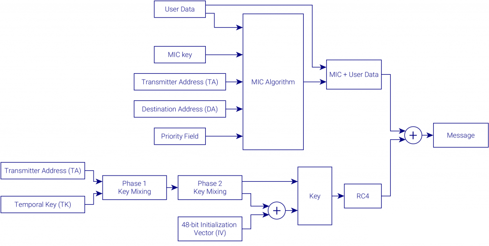

WPA(WiFi Protected Access o Acceso Wi-Fi Protegido) fue presentado en 2003 como una respuesta directa a los problemas observados en el protocolo WEP. WPA utiliza el protocolo de integridad de clave temporal (TKIP) para cifrar los datos enviados durante la coneccion, tkip utiliza el mismo algoritmo de cifrado que el utilizado en WEP pero la generación de la clave se realiza de manera diferente. TKIP comienza con una clave temporal de 128 bits que es compartida tanto por el punto de acceso como también por el host, luego combina esta clave temporal con la dirección mac del host y un contador que va aumentando paquete a paquete y luego agrega un vector de iniciación de 48 bits para así crear la clave de cifrado de datos. Para evitar la detección de la clave de cifrado tkip cambia la clave temporal cada 10.000 paquetes lo que produce una nueva clave para cada cliente y la variación de las claves durante la conexión.
El objetivo de este sistema es proporcionar a la red inalámbrica la misma seguridad que tiene una red cableada (de ahí su nombre).
Para encriptar mensajes usan claves de 104 o 40 bits (WEP 128 o WEP 64).
Para autenticar existen dos posibilidades: